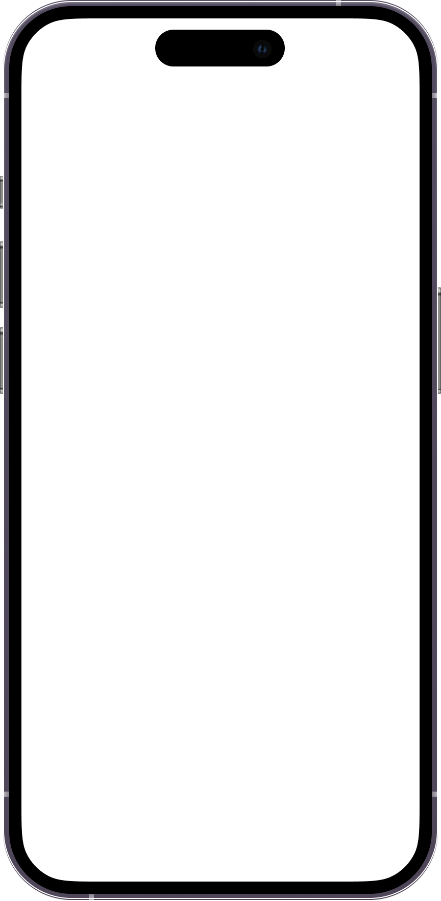

К проектам

SC208
B2C
Mobile App
Как я перевела ключевые пользовательские сценарии
в мобильное приложение
SC208
B2C
WEB
Как я упростила пользовательский путь и увеличила количество заявок почти в 6 раз
FORMA
B2C
B2B
WEB
Как я сделала редизайн сайта производителя премиальных дверей с фокусом на привлечение клиентов и комплексные проекты
GKA DOCKS
B2C
B2B
WEB
Как я упростила выбор сложного технического продукта
и спроектировала разные сценарии покупки для B2B и B2C
Перейти в проект